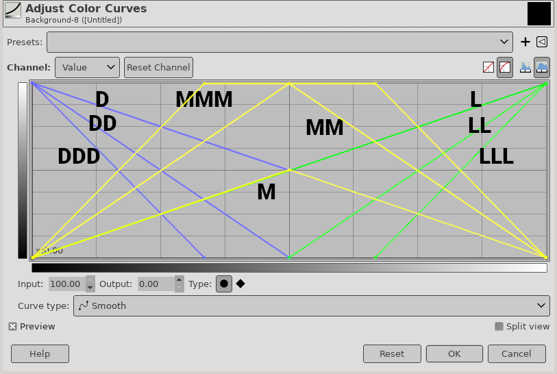
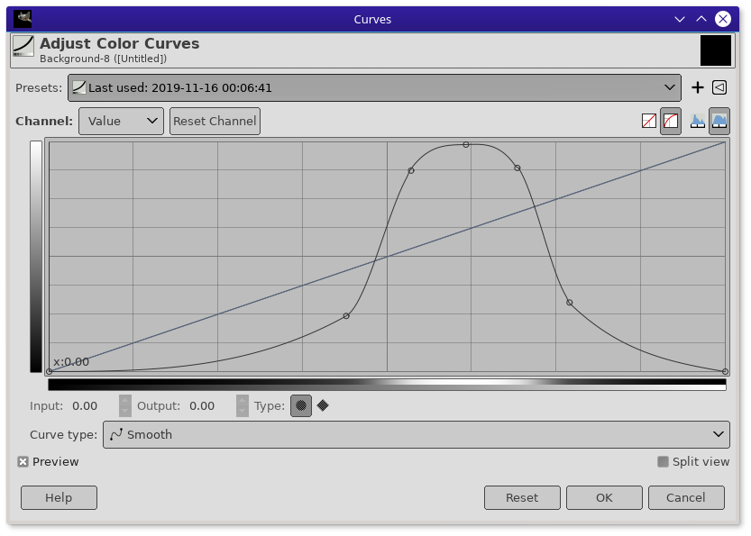

This plug-in creates a selection mask based on the luminosity of pixels.
These selection masks are called "Luminosity masks" and are a very powerful technique to perform smooth and natural color changes in a picture. This technique is very well explained in PatDavid's canonical tutorial on the subject.
This plug-in creates the masks shown in the tutorial, among others
Unlike the tutorial, and unlike most Gimp scripts based on this tutorial,
A side benefit of the single-mask approach is that the selection can be automatically set from the mask and this saves a few mouse clicks.
Select>Luminosity in the image window. There is one menu entry per mask, and there are no parameters, so that you can assign your favorite masks to keystrokes (filter on ofn-luminosity to find them).#Luminosity:<name of mask>.#Luminosity:, so to keep a mask you just have to rename it.View>Show selection or QCtrl-T)Select>Selection EditorDefining a luminosity mask is exactly equivalent to defining a "curve", the only difference being how the curve is interpreted.
The usual masks correspond to simple curves:

But you can make arbitrary ones, for instance, if you want to deal with things that are light, but not very light (according to some authors, S-shaped sides make for smoother transitions):

For a one-shot usage, you would:
Raw luminosity mask).But if you often use the same mask this gets tedious. You can of course save the curve as a preset of the Curves tool, but this plug-in lets you define your own curves by putting them in a plug-in configuration file.
The file structure is simple. Lines are either
#; these are optional commentsLines that are made of three sections, separated by a ;:
The points that define the curves, as spaces-separated pairs of "X Y" coordinates
Example/Middle-Light;Light mediums;0.00 0.00 0.75 1.00 1.00 0.00
It would be tedious to copy points coordinates between the Curves display and the
configuration file, but there is an easy way: if you apply the curve once (for instance
when using the "quickmask", as mentioned above), it is saved as a preset,
and this preset is the first that appears in the Presets selector
(you can also save it and give it a name by clicking the + icon).
The presets are saved in a text file: in 2.10 this is
{your Gimp profile}/filters/GimpCurvesConfig.settings.
(GimpCurvesConfig "2019-11-16 00:11:19"
(time 1573859479)
(linear no)
(channel value)
(curve
(curve-type smooth)
(points 14 0 0 0.43941411451398138 0.2421875 0.5352862849533957 0.875 0.61651131824234351⏎
0.98828125 0.69241011984021306 0.88671875 0.76964047936085211 0.30078125 1 0)
(point-types 7 smooth smooth smooth smooth smooth smooth smooth)
(n-samples 256)
[... snip ...]
The top item is the last saved preset. The line that starts with (points is the one of interest. Its contents (minus the opening (points, the first number (14), and the closing )) can be used directly in the plug-in
configuration:
Example/Middle-Light;Light mediums;0 0 0.43941411451398138 0.2421875⏎ 0.5352862849533957 0.875 0.61651131824234351 0.98828125 0.69241011984021306⏎ 0.88671875 0.76964047936085211 0.30078125 1 0
(the line above is folded for readability, this should be one single line). There is no need to be this accurate in practice, the values can be rounded to a couple of decimals to make the line an easier read:
Example/Middle-Light;Light mediums;0 0 0.44 0.24 0.54 0.86 0.62 0.99 0.69 0.89 0.77 0.30 1 0
Doc directory..ini instead of .py.tool-presets subdirectory of the Gimp profile